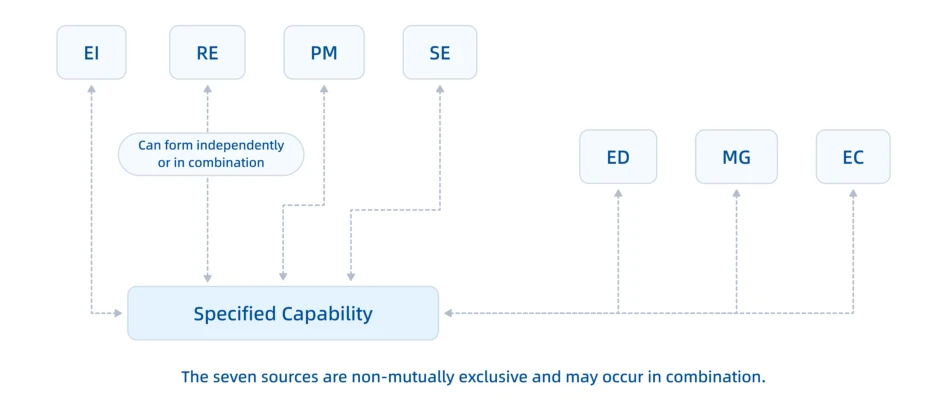
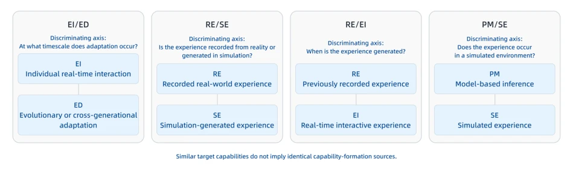
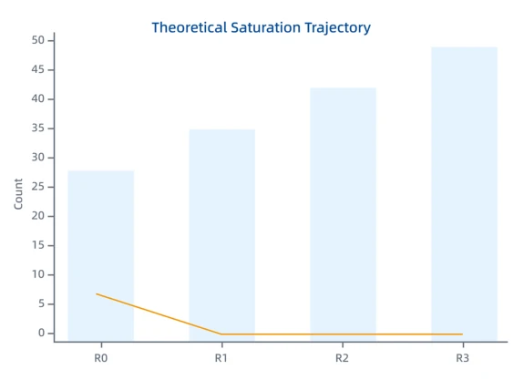

这篇论文没搞新模型，而是给物理 AI 的“出身”做了个户口普查。作者把能力来源拆成七类，从记录经验到进化驱动，试图解决“能力相似但形成路径不同”的混淆问题。亮点在于把“数据驱动”这种模糊概念拆解得够细，比如区分了离线数据（RE）和在线反馈（EI），这对投资评估和监管很有用。但槽点也不少，这本质是文献综述加分类学，缺乏实证数据支撑，所谓的“理论饱和”只是基于 2026 年 9 月前的文献截止，未来新范式随时可能打脸。而且七类边界在复杂系统中难免模糊，比如一个系统可能同时用 RE 和 EI，怎么量化权重？这框架更像是一个审计清单，而非技术路线图。
This paper does not develop a new model, but conducts a census of the "origin" of Physical AI. The authors decompose capability sources into seven categories, ranging from recorded experience to evolution-driven, attempting to resolve the confusion regarding "similar capabilities but different formation paths". The highlight lies in sufficiently finely decomposing the vague concept of "data-driven", such as distinguishing offline data (RE) and online feedback (EI), which is very useful for investment assessment and regulation. However, there are also many drawbacks. This is essentially a literature review plus taxonomy, lacking empirical data support. The so-called "theoretical saturation" is merely based on a literature cutoff before September 2026, and future new paradigms could contradict at any time. Moreover, the boundaries of the seven categories are inevitably fuzzy in complex systems; for example, a system might use both RE and EI simultaneously, so how to quantify weights? This framework is more like an audit checklist rather than a technical roadmap.
Existing literature often classifies by robot morphology, model architecture, or task, but this cannot answer the fundamental question of "where capabilities come from". For example, two robots both possess grasping capabilities; one relies on imitation learning (RE), one on reinforcement learning (EI), and their transferability and dependent assets are completely different. The authors point out that looking only at final performance or whether it is "embodied" will mask the differences in formation dependency, leading to distorted technical assessment. Cited literature such as RT-2 [8] and Dreamer [19] demonstrate different formation paths. This study aims to provide an auditable, falsifiable vocabulary, distinguishing capability similarity from formation condition similarity, which is crucial for understanding technical assets, governance evidence, and geo-economic foundations.
方法Method
方法采用重构性归纳设计，以理论饱和为停止准则。首先从现有研究矩阵回溯至原始文献，去重后建立 R0 核心文献集（49 条证据记录）。随后进行三轮最大差异与负例采样挑战（R1-R3），测试候选反例（如课程学习、自监督、数字孪生等）是否构成新源。定义七类形成源（RE, PM, EI, SE, MG, EC, ED），每类设定正负边界标准。例如 RE 要求固定记录经验，而 EI 强调评估反馈更新能力。通过编码规则确保因子独立可识别，排除仅涉及部署或架构的因素，如部署期调用或安全过滤不计入。R2 明确部署期使用不计入，R3 确认无需新定义。最终验证在给定范围内无不可归约的新源，达成理论饱和。
The method adopts a reconstructive inductive design, with theoretical saturation as the stopping criterion. First, backtrack from the existing research matrix to original literature; after deduplication, establish the R0 core literature set (49 evidence records). Subsequently conduct three rounds of maximum difference and negative example sampling challenges (R1-R3), testing whether candidate counterexamples (such as curriculum learning, self-supervised, digital twins, etc.) constitute new sources. Define seven formation sources (RE, PM, EI, SE, MG, EC, ED), setting positive and negative boundary standards for each category. For example, RE requires fixed recorded experience, while EI emphasizes evaluation feedback updating capability. Ensure factors are independently identifiable through coding rules, excluding factors involving only deployment or architecture, such as deployment period calls or security filtering not counted. R2 clarifies deployment period usage not counted; R3 confirms no new definitions needed. Finally verify no irreducible new sources within the given scope, achieving theoretical saturation.

Figure 1: Relationship Between the Seven Capability-Formation Sources and a Specified Capability.

Figure 2: Key Adjacent Boundaries Among the Seven Capability-Formation Sources
This study has no traditional machine learning experiments, but validates framework effectiveness through literature classification. The dataset consists of 49 evidence records collected before September 4, 2026, covering 45 public sources. The baseline is the R0 initial framework, and the evaluation metric is "whether it produces an irreducible new source". In the three rounds of challenges, R1-R3 respectively introduce curriculum learning, self-supervised, digital twins, active inference, etc. as candidate counterexamples; results are all explained by the existing seven categories, no new definitions triggered. Ablation analysis is reflected in boundary rule refinement, such as R2 clarifies deployment period usage not counted, fixed generation samples assigned to RE while interactive environment assigned to SE. Findings indicate that many seemingly independent technologies (such as active inference) can be decomposed into PM+EI combinations; the framework has explanatory power but depends on the literature scope, and the inter-coder reliability coefficient was not reported.

Figure 3: Theoretical Saturation Trajectory of the Seven Capability-Formation Sources Bars: Cumulative evidence records = 28 →35 →42 →49 Line: Irreducible new sources = 7 →0 →0 →0 R2 marks the last substantive boundary refinement; R3 serves as a stability confirmation.